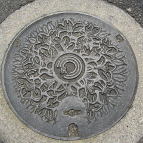
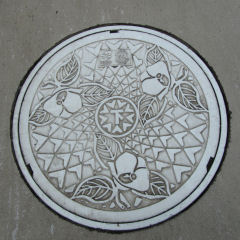
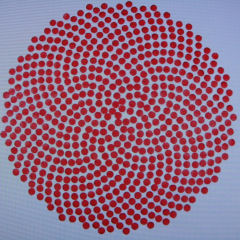

呉線沿線〜広島駅の旅 Ｐａｒt ２
安浦町。
町の花は
躑躅（つつじ）。
蓋を開くために
正三角形の特殊な
工具が必要。

川尻町。
放射状に
広がるつつじ。

呉市の花は椿（つばき）。
白いプラスチックのふた。
このタイプのふたは
重たいトラックが乗ると
あっさりと壊れる。
市名の由来（諸説あり）
呉一帯をつつむ連峰を
「九嶺（きゅうれい）」と呼び、
それがなまって「くれ」になった。
なお、市章はこれにあやかり、
カタカナの「レ」9つで
星形をかたどったものである。
灰ヶ峰から伐採した
くれ（榑、板材の意）が
特産品として
有名になったことに由来する。
呉周辺に住んでいた
渡来人を
「くれ人」と
呼んでいたことに由来する。
wikipediaより引用
坂町。
町の花 朝顔
町の木 梅
町の鳥 めじろ
海田町（かいたちょう）の
海田市（かいたいち）。
中世に開拓された荘園
「開田荘」に由来する。
ここで山陽本線と
接続するが、
旅はまだ、終わらない。
町の花は
向日葵（ひまわり）。
©ＮＨＫ

©ＮＨＫ
向日葵の種の
配列アルゴリズム。
府中町。
町の花は椿（つばき）。
古代に、安芸国府が
設置されていた事に由来する。
全国に同じ地名が実存する。
マツダの本社がある。
「府中焼き」や伝統家具の
府中市とは別。
広島駅の東側の
貨物ヤード跡地にできた
マツダスタジアム。
カープ坊や！！
マンホールなので
帽子のツバとバットは
円から飛び出ない。
■■■■■
■■■■■■■。
■■■■■■
■■■■■。
■■■、■■■■
■■■■■
■■■■■■
■■■■■■。
■■■■■■■
■■■■■■
■■■■■■■■
■■■■■。
■■、■■■■■
■■■■■■
■■■■■■■■
■■■■■■■。
■■■■■■■
■■■■■■■■
■■■■■■■■。
※合衆国に都合の悪い事実が
含まれているため
掲載できませんでした。
横川駅付近。
日本最初の
国産乗合バス
誕生の地。
横川〜可部の区間。
かべの「か」と
よこがわの「よこ」を
つなげて、かよこバス。